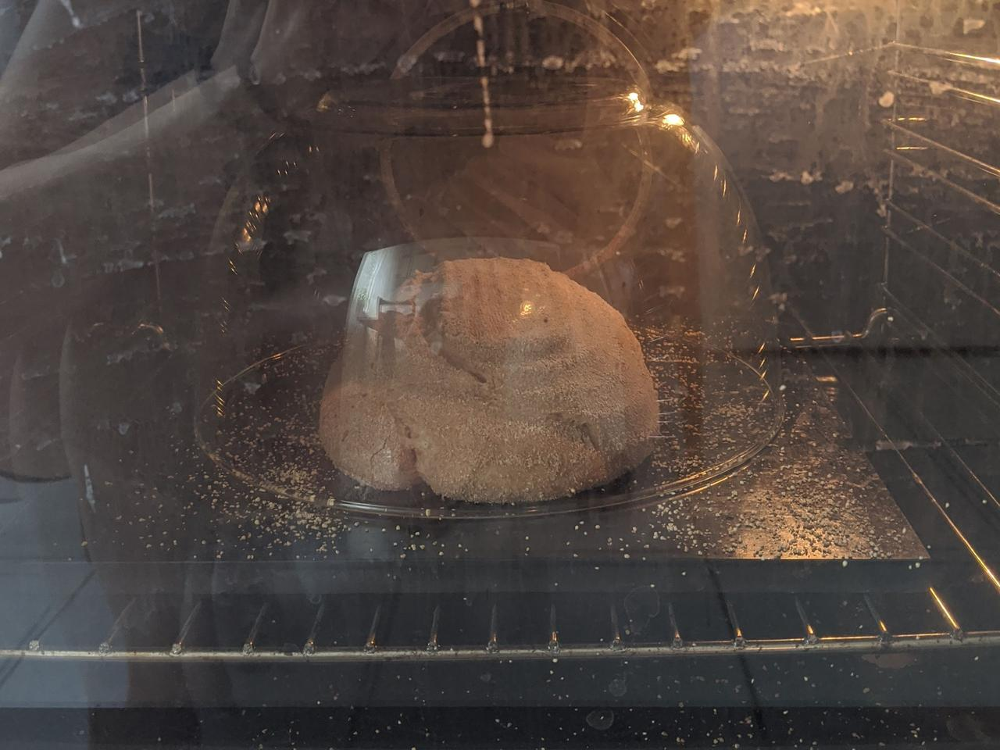

Vollkornmischbrot
Dieses Brot backe ich oft, wenn ich mich nicht entscheiden kann, auf was ich Lust habe. Das Rezept ist auch genauso entstanden. Ich hatte kleine Reste Dinkel, Roggen und Weizen und diese kamen einfach zusammen in die Schüssel. Heraus kommt ein leckeres, lockeres und aromatisches Vollkornbrot für alle Gelegenheiten. Das Rezept ergibt zwei Brote.

Sauerteig
- 50 g aktives Anstellgut
- 100 g Roggenvollkornmehl
- 100 g Wasser, warm
Hauptteig
- 200 g Sauerteig
- 100 g Roggenvollkornmehl
- 400 g Weizenvollkornmehl
- 400 g Dinkelvollkornmehl
- 700 g Wasser, warm
- 20 g Salz
Am Abend des Vortags den Sauerteig im Wasser auflösen und das Roggenvollkornmehl dazumischen. Über Nacht 8-10 Stunden bei Raumtemperatur reifen lassen. Wenn es sehr warm ist, lasse ich den Sauerteig auch gerne nur 3 Stunden bei Raumtemperatur (25°C) stehen und stelle ihn dann 12 Stunden im Kühlschrank nachgären. Das verhindert, dass der Sauerteig zu sauer wird.
Am Morgen alle Mehlsorten mit dem Wasser mischen und 1 Stunde stehen lassen.
Dann Sauerteig und Salz dazugeben und einige Minuten gut dehnen und falten.
Während den nächsten 2,5 Stunden Stockgare den Teig mit einem Abstand von 20-30 Minuten 3 mal dehnen und falten. Ich habe diesmal beim dritten Faltvorgang die Methode ausprobiert: den Teig auf eine feuchte Arbeitsfläche gehen und mit feuchten Händen zu einem großes Rechteck vorsichtig breitziehen. Dann alle vier Kanten in die Mitte umschlagen, wie einen Brief. Den Teig wieder zurück in die Schüssel geben.
Wenn der Teig etwa 50% aufgegangen ist, vorsichtig auf eine Arbeitsfläche geben, in zwei gleichgroße Teile einteilen und vorsichtig rundwirken. 10 Minuten ruhen lassen, mit Reismehl bestreuen und dann nochmal straff zu einer Kugel formen und in bemehlte Gärkörbchen setzen. Abgedeckt bei Raumtemperatur 30-45 Minuten gehen lassen, dann für 1-8 Stunden in den Kühlschrank stellen.
Den Ofen auf 250°C aufheizen. Normalerweise heize ich einen Gusseisentopf mit auf, heute habe ich aber meinen Pizzastahl (Pizzastein geht auch) verwendet. Zum Abdecken nahm ich eine hitzebeständige Glasschüssel, die dann umdreht als Abdeckung diente. Dies hat den Vorteil, dass man das Brot einfacher in den Ofen bekommt, nämlich mit einem Pizzaschieber, anstatt in den heißen Topf greifen zu müssen.

Nach einer Stunde aufheizen das erste Brot auf den Stahl oder in den Topf setzen, mit Schüssel oder Deckel verschließen und bei 230°C 20 Minuten backen. Die Abdeckung entfernen und 20-30 Minuten bei 200°C fertigbacken. Den Ofen nochmal 10 Minuten auf 250°C aufheizen lassen und mit dem zweiten Brot ebenso verfahren.